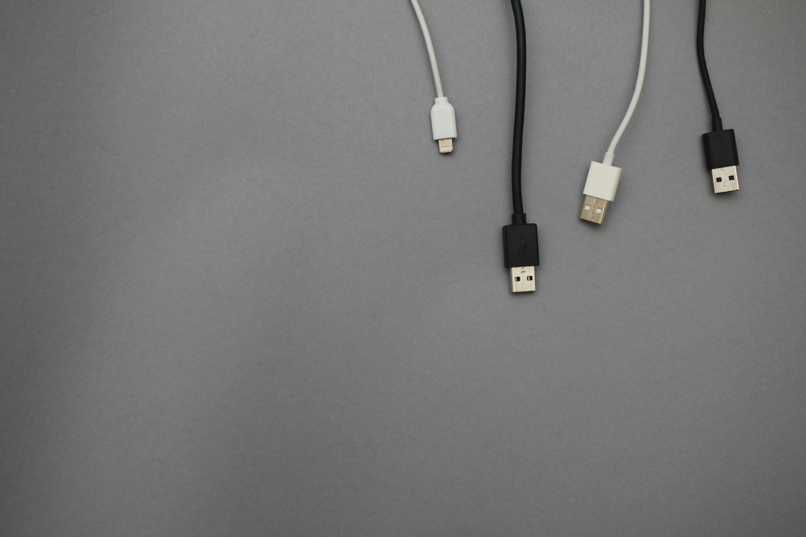

Bakım/Onarım & Yedek Parça
Hizmet Detayları
IT altyapınızın sağlıklı çalışabilmesi için düzenli bakım ve zamanında parça değişimi şarttır. Donanım ve sistemler zamanla çevresel faktörler, kullanım yoğunluğu ya da arızalar nedeniyle performans kaybına uğrayabilir. Bu tür durumların önüne geçmek için profesyonel bakım ve doğru yedek parça temini kritik rol oynar.
Nokta Bilişim olarak; sistemlerinizi düzenli aralıklarla kontrol ediyor, olası arızaları önceden tespit ediyor ve gerektiğinde yüksek kaliteli yedek parçalarla müdahale ediyoruz. Böylece kesintisiz, verimli ve güvenli bir iş akışı sağlıyoruz.

Neden Biz?
İşiniz aksamadan sistemleriniz tam kapasite çalışsın!
Uzman ekibimizle ihtiyaç duyduğunuz tüm parçaları en hızlı ve en güvenli şekilde sağlıyoruz
Profesyonel bakım çözümlerimizle sadece sorunları gidermekle kalmıyor, sisteminizi geleceğe hazırlıyoruz
Yalnızca güvenilir, test edilmiş ve garantili parçalar kullanırız

Size Sağladığı Faydalar
- Sistemlerin düzenli bakım ile ömrü uzatılır.
- Arızalar önceden tespit edilerek iş kesintisi önlenir.
- Gerekli durumlarda hızlı ve doğru yedek parça değişimi yapılır.
- Maliyet avantajı sağlar, yeni cihaz alımını geciktirir.
- Ağa bağlı cihazları merkezi olarak yönetmeyi sağlar.
- Kesintisiz ve güvenilir bir çalışma ortamı sunar.
Size özel teknoloji çözümlerimiz için bizimle iletişime geçin.
Uzman ekibimizle en uygun çözümü birlikte belirleyelim.